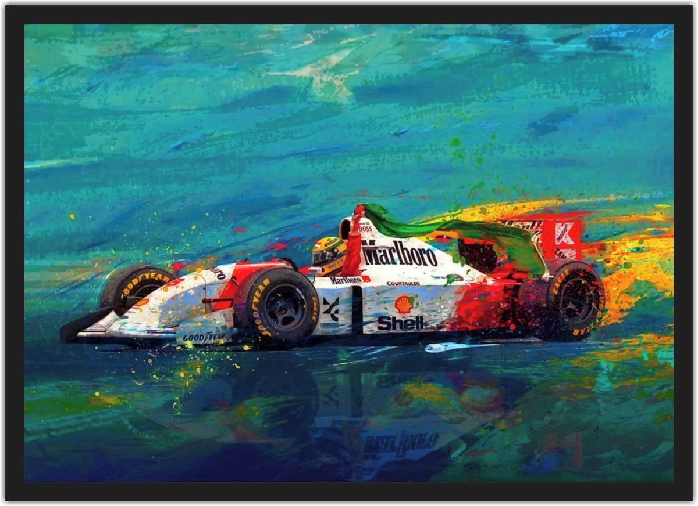
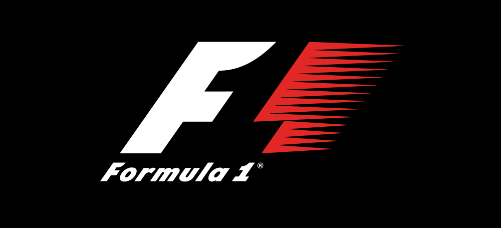

-

- 
Com 72 anos de história, a Fórmula 1 é considerada a maior competição automobilística do mundo. E a popularidade do esporte só cresce! Recheada de corridas inesquecíveis, a competição registrou uma audiência de 1,55 bilhão de pessoas em 2021, somando público, canais digitais e televisão.
“Além disso, a F1 se tornou a liga esportiva que mais cresce nas redes sociais, com um total de quase 50 milhões de seguidores no Facebook, Twitter, Instagram, YouTube, TikTok e outras mídias, de acordo com relatório divulgado pela própria liga. Neste ano, a Porto Seguro Bank é patrocinadora oficial da Fórmula 1 e irá proporcionar uma série de experiências emocionantes e benefícios exclusivos. Para entrar no clima, nós preparamos um guia com tudo que você precisa saber sobre a história do torneio.”